Starting State

Annotation textual equivalents
| Overlay label | Evidence basis | Text equivalent |
|---|---|---|
| Later red-door requirement | regressed-requirement | The later red door at (14,16,0) is a backward-regressed requirement, not an observed consequence of this segment. |
| Retained blue-key candidate | backward-candidate | The blue key at (14,19,0) remains a distinct backward candidate. |
| Selected red-key candidate | backward-candidate | The exact selected red-key placement is the backward candidate at (16,19,0). |
| One-step plan intent | plan-intent | Plan intent proposes (15,19,0) to (16,19,0); P3 explicitly records no observed full route. |
| Observed start player position | observed-witness | The exact observed player start is (15,19,0) at native tick -1. |
Cell-stack textual equivalent
| Coordinate | Exact supplied semantic stack |
|---|---|
| (13,16,0) | terrain:cc1:wall |
| (14,16,0) | terrain:cc1:door-red |
| (15,16,0) | terrain:cc1:wall |
| (16,16,0) | terrain:cc1:door-yellow |
| (17,16,0) | terrain:cc1:wall |
| (13,17,0) | terrain:cc1:wall |
| (14,17,0) | terrain:cc1:floor |
| (15,17,0) | terrain:cc1:hintbutton |
| (16,17,0) | terrain:cc1:floor |
| (17,17,0) | terrain:cc1:wall |
| (13,18,0) | terrain:cc1:wall |
| (14,18,0) | terrain:cc1:floor |
| (15,18,0) | terrain:cc1:floor |
| (16,18,0) | terrain:cc1:floor |
| (17,18,0) | terrain:cc1:wall |
| (13,19,0) | terrain:cc1:wall |
| (14,19,0) | pickup:cc1:key-blue |
| (15,19,0) | actor:cc1:chip |
| (16,19,0) | pickup:cc1:key-red |
| (17,19,0) | terrain:cc1:wall |
| (13,20,0) | terrain:cc1:wall |
| (14,20,0) | terrain:cc1:wall |
| (15,20,0) | terrain:cc1:wall |
| (16,20,0) | terrain:cc1:wall |
| (17,20,0) | terrain:cc1:wall |